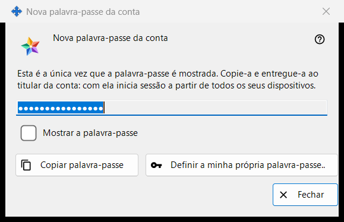
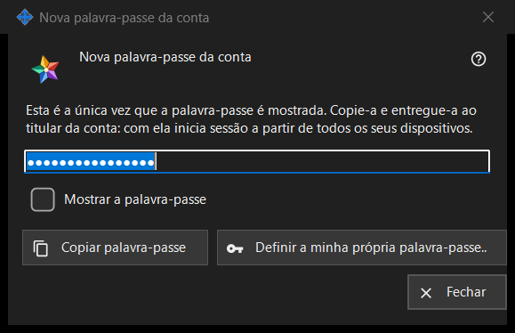

Nova senha da conta
Finalidade
Mostra ou pede a senha de uma conta do servidor de troca, em três modos: Gerada mostra, uma só vez, uma senha que o programa acabou de criar (a imagem); Digitada pede uma senha própria; Salva mostra uma senha armazenada neste PC. A janela se abre nas configurações do servidor de troca local do Share Manager depois de «Adicionar uma conta..», «Redefinir senha..» ou «Definir senha compartilhada..», e a partir das perguntas sobre a senha do administrador.


Nesta ordem
- Gerada: clique em «Copiar senha» (marque «Mostrar a senha» para lê-la), entregue a senha ao titular da conta e clique em «Fechar».
- Senha própria: clique em «Definir minha própria senha..» ou escolha «Digitar a senha eu mesmo», digite uma senha que cumpra a regra e clique em «Salvar senha».
- Salva: selecione a conta e clique em «Mostrar senha..».
Os elementos
Senha gerada (na imagem)
Título da janela «Nova senha da conta». O texto de introdução diz: «Esta é a única vez que a senha é mostrada. Copie-a e entregue-a ao titular da conta: com ela, ele entra a partir de todos os seus dispositivos.» O campo está mascarado e é somente leitura; «Mostrar a senha» a revela apenas nesta janela. «Copiar senha» a coloca na área de transferência por uma via protegida que a mantém fora do histórico da área de transferência do Windows e da área de transferência na nuvem, e responde «A senha foi copiada.». O campo é esvaziado quando a janela se fecha.
Fechar sem copiar
Se fechar uma senha gerada que não copiou nem mostrou, o programa pergunta «Fechar sem copiar a senha?» e acrescenta que ela não pode ser mostrada de novo - depois só poderá ser redefinida. A resposta padrão é «Não». Quando a senha fica salva neste PC, não é feita nenhuma pergunta.
Definir minha própria senha..
É usado na janela da conta, na da senha de convite compartilhada e na da senha de administrador: fecha esta janela sem usar a senha gerada e volta a pedir uma, agora a que você mesmo digita, que substitui a gerada.
Senha digitada
Título «Senha da conta», legenda «Senha:», um campo mascarado e «Mostrar a senha». Sugestão: «Pelo menos 10 caracteres, com uma letra latina maiúscula, uma minúscula e um dígito.» Enquanto digita, uma linha de aviso indica o que falta, por exemplo «É necessário pelo menos um dígito.». «Salvar senha» recusa uma senha que não cumpra a regra; uma que a cumpra volta à janela que a pediu, e a última palavra continua sendo do servidor.
Senha salva
O título acrescenta o nome de usuário a «Senha da conta». A janela mostra a senha armazenada neste PC, somente leitura, com «Mostrar a senha» e «Copiar senha»; ao fechar, nada é perguntado. A janela se abre com «Mostrar senha..» na lista de contas, que só aparece enquanto o interruptor «Guardar as senhas das contas neste PC» está ativado. O interruptor está desativado por padrão; ao ativá-lo, o programa pergunta primeiro, e a senha fica depois salva criptografada para a sua conta Windows, legível por qualquer programa que seja executado com ela. Uma senha definida antes de ativar o interruptor não é salva.
Configurações do gerenciador · Configurações de compartilhamento SFTP · Configurações do servidor de troca